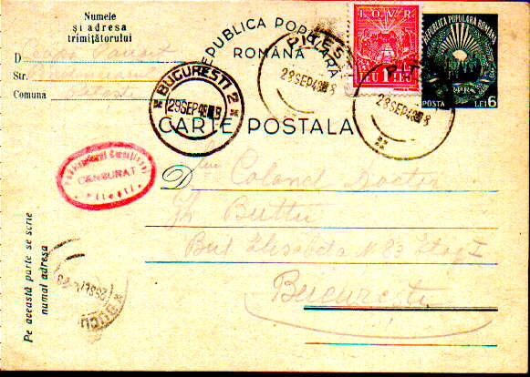

| CENZURA PENITENCIARULUI PITESTI | CENSORSHIP OF THE PENITENTIARY PITESTI |
| Article published in 'Filatelia', no.3-4 / March-April 1991. |
Dan Grecu, România |
|
 |
|
În România comunistă, la mare pret s-au situat în colectii si exponate misivele diversilor 'luptători antifascisti' trimise din închisori cu mari semnificatii pentru guvernanti (Târgu Jiu, Doftana, etc). A sosit însă timpul să întregim tabloul universului concentrationar politic românesc cu marele fragment lipsă - 'Gulagul românesc', locuri de detentie si exterminare a zeci de mii de opozanti adevărati si închipuiti ai regimurilor comuniste din tara noastră. Facem o invitatie la cercetarea si publicarea documentelor postale referitoare la acestea prin semnalarea următoarei piese. Este
vorba de un întreg-carte postală din 1948, cu marcă fixă tip Stema RPR
albastru, nominal 6 lei, carton crem, având aplicată si o marcă IOVR, 1 leu
rosu. Este scrisă cu creionul la data de 23 sept. 1948 (după cum rezultă din
text). Plecarea din Pitesti, la data de 28 sept. ora 8.00, fapt atestat de
stampilele de zi aplicate. Între timp, cartea postală este cenzurată, cu
stampila ovală de culoare rosie, cu dimensiunile exterioare de 28 x 19 mm si
cu textul: 'Penitenciarul Corectional / CENSURAT / * Pitesti *',
neînsotită de semnătura cenzorului. De mentionat cuvântul 'cenzurat', care
în 1948, în timp de 'pace', spune multe... |
In the communist
Romania the documents of the different "antifascist fighters" who were
imprisoned (at Târgu Jiu, Doftana, etc.) were especially appreciated in
collections and exhibits. The time came to complete the image of the
Romanian repressive universe with the big missing piece - "The Romanian
Gulag" - the place of detention and extermination of tens of thousands of
real or imagined opponents of the communist regimes in our country. We make
an invitation toward the research and the publication of the postal
documents that refer to this, by presenting the stationary shown above. It is about a postal stationary of 1948, with an imprinted stamp type "Coat of Arms" RRR, blue, face value 6 lei, yellow cardboard, with also a stamp IOVR, 1 leu red. It is written with a pencil on Sept. 23, 1948, as shown by the text. Left Pitesti on Sept. 28, 8:00 AM, as shown by the cancels. Meanwhile the card is censored, and marked by an oval red cancel 'Penitenciarul Corectional / CENSURAT / * Pitesti *', without the censor's signature. Please pay attention to the usage of the word "censored" during peace time... The card arrived a day later in Bucharest, on Sept. 29, 8:00.
And a last note: this stationary is related to
the place where, between 1949-1952, will take place the horrible "Pitesti
experiment", a special moment of the terror that started to be applied. But
when this card was sent, the gathering of the future 'guinea pigs' just
started. The Popular Republic did her first decided steps toward Stalin's
democracy. (Free translation by Victor Manta) |